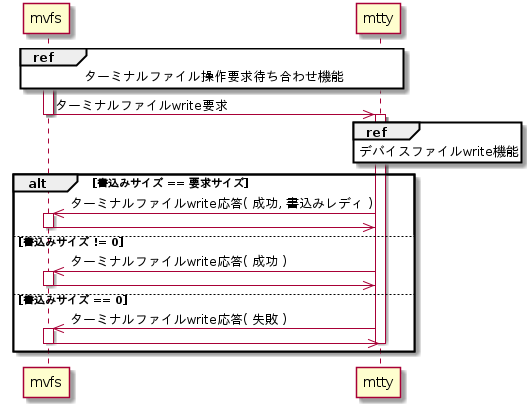
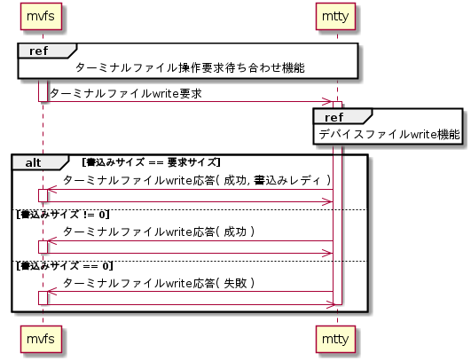

ターミナルファイルwrite要求処理機能
mvfsからターミナルファイルwrite要求を受け付けた時にデバイスファイルwrite機能によりデータをデバイスに書き込む。シーケンスを以下に示す。
シーケンス


ターミナルファイルwrite応答
ターミナルファイルwrite応答はmvfsライブラリのLibMvfsSendVfsWriteResp()を用いる。設定パラメータを以下に示す。
LibMvfsSendVfsWriteResp()設定パラメータ
| # | 引数名 | 設定値 | ||
| 書込みサイズ == サイズ | 書込みサイズ > 0 | 書込みサイズ == 0 または、エラー |
||
| 1 | globalFd | (要求時のグローバルFD) | ||
| 2 | result | LIBMVFS_RET_SUCCESS | LIBMVFS_RET_FAILURE | |
| 3 | ready | MVFS_READY_WRITE | MVFS_READY_WRITE ※本来は0だが通知機能 が無いので常にready |
|
| 4 | size | (書込みサイズ) | 0 | |
| 5 | *pErrNo | (エラー要因格納先ポインタ) | ||